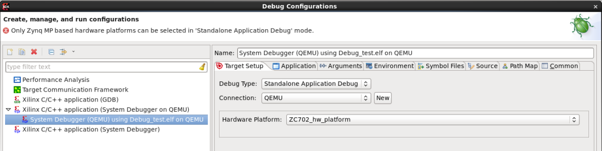
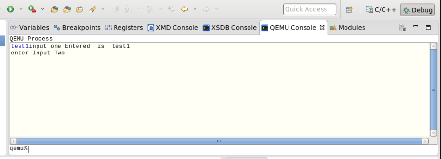

- Launch SDK.
- Create a standalone application project. Alternatively, you can also select an existing project.
- Select Run > Debug Configurations.
-
Double-click Xilinx C/C++ application (System Debugger on QEMU) to create a new
configuration.
Note: Only Zynq® UltraScale+™ MPSoC based hardware platforms can be selected for standalone application debugging.

-
In the Debug Configuration dialog box:
- If your application is expecting some arguments, specify them in the Arguments tab page.
- If your application is expecting to set some environment variables, specify them in the Environments tab page.
- Click Debug.

-
You can also launch the QEMU Console by selecting Window > Show View > Other menu. The QEMU Console can be used to interact with the program running on QEMU. The STDIN can be provided in the input box at the qemu% prompt. Output is displayed in the area above the input text.
